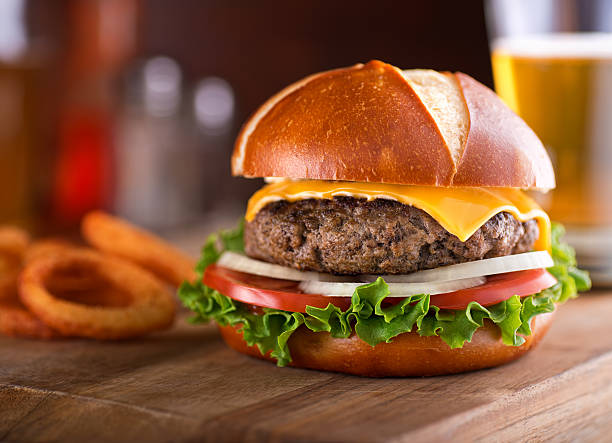

If you want to save yourself a heart disease, cooking your favorite food will always be the better option than ordering fast food. This delicious hamburger recipe is easy to follow and hard to resist!
Servings: 6 patties
Set out a large mixing bowl and add in the ground beef, crushed crackers, egg, Worcestershire sauce, milk, and spices. Use your hands to thoroughly combine until the mixture is very smooth.
Press the meat down in the bowl, into an even disk. Use a knife to cut and divide the hamburger patty mixture into 6 – 1/3 pound grill or skillet patties, or 12 thin griddle patties.
Set out a baking sheet, lined with wax paper or foil, to hold the patties. One at a time, gather the patty mix and press firmly into patties of your desired thickness. Tip! You typically want hamburger patties to be slightly larger than the buns they’ll be served on since they’ll shrink a bit in the cooking process.
Place the formed patties on the baking sheet. With thick patties, press a dent in the center of each patty, so they don’t puff up while cooking. You can stack the patties with sheets of wax paper between layers if needed.
Preheat the grill or a skillet to medium heat, approximately 350-400 degrees F.
For thick patties: Grill or fry the patties for 3-4 minutes per side for a medium burger.
For thin patties: Cook on the griddle for 2 minutes per side.
Stack the hot patties on hamburger buns, and dress up with your favorite hamburger toppings and condiments.
Return to the top of the page.